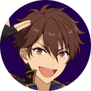
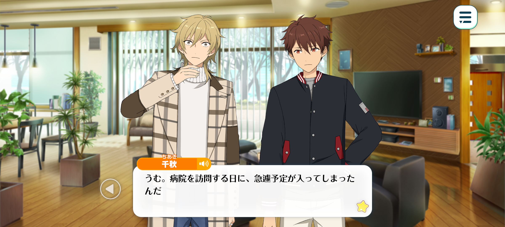
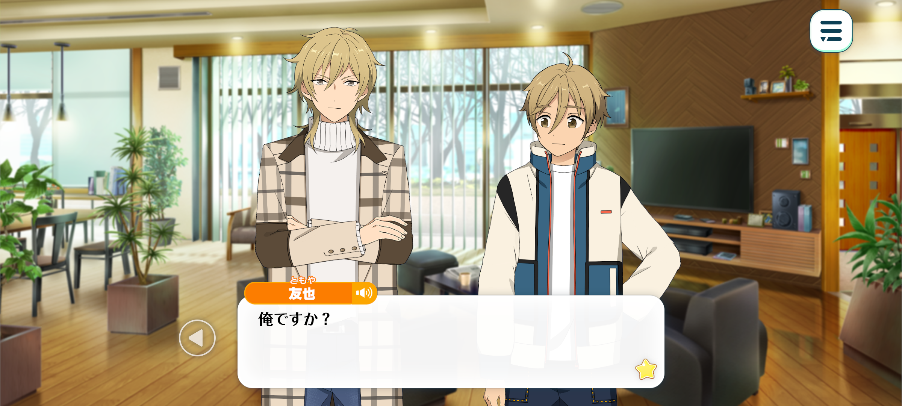

Scout! Scorpio's Venom
Capture Your Heart – Chapter 5



Time: Five minutes later
Location: Common Room

Kaoru: —Wait, what? You've got work that day?!
Chiaki: Umu. Something's suddenly come up on the very day we were supposed to visit the hospital.
I'm terribly sorry, Hakaze.
Kaoru: You can apologise all you like, but... I mean, can't you rearrange things somehow?
Chiaki: I'm afraid not. If I finish early, I'll do my best to make it, but I can't promise anything.
Kaoru: Right... Well, that's a shame.
…
...You know, that poor kid's going to be heartbroken if you don't show up.
But... what if Tomoya-kun took your place?

Tomoya: Me?
Kaoru: Yeah! You were planning on coming along to look after Hokuto-senpai-chan anyway, so why not join in while you're there?
Although... I suppose that's asking quite a lot of you.
Tomoya: I don't mind at all! Hmm... A hero show with just the two of us, huh?
So, who's going to play the villain?
Kaoru + Chiaki: Moricchi! (Hakaze!)
Kaoru + Chiaki: …Huh?
Kaoru: Wait, I thought I was supposed to be the hero? Didn't you say I'd be wearing Midori-kun's costume?
Chiaki: I did! But wouldn't it be confusing for the children if I played the villain while wearing my Ryusei Red costume?
Kaoru: Well, someone's got to be the villain, right? Every hero needs someone to fight!
Tomoya: Umm... How about I play the villain, then?
Kaoru: You? Uhhh…
...No, I'll do it. UNDEAD's costumes are perfect for the part.
Your Ra*bits costume has white in it, which is the colour of justice. And with Hokuto-senpai-chan playing some sort of mascot, I think it'll all come together nicely.
Chiaki: That sounds wonderful! But are you sure you're alright with that?
Kaoru: Of course. It was my idea, after all.
UNDEAD is an edgy unit with an image built around immoral demons lurking in the darkness of night. Playing the villain should come much more naturally to me than playing the hero...♪
Chiaki: Alright, then! Thank you, Hakaze!
Kaoru: Ahaha. We've only just decided who's playing what. Isn't it a little early to be thanking me?
So, Tomoya-kun will be our main hero, Moricchi will be the other hero who might or might not make an appearance, and I'll be the villain...
With the three of us and Hokuto-senpai-chan, I'm sure we'll put on quite a show! Now then, what sort of story should we come up with?
Tomoya: Let's see... Ah, before we get started, shouldn't we decide on your villain's name, Hakaze-senpai?
Kaoru: My name?
Tomoya: Well, heroes and villains usually have really cool aliases, don't they? Something like... UNDEAD Kaijin?[1]
Kaoru: UNDEAD Kaijin…? That's a bit...
Tomoya: I-I was just giving an example! Anyway, I thought it'd be easier to come up with a suitable villain name for you first, Hakaze-senpai, and then build the story around it!
Chiaki: You certainly seem to know your stuff. Have you done hero shows before?
Tomoya: No, this is my first time. Though I do have some experience with improvisation from theatre club.
When you're improvising, it's important to understand who your character is and what they're trying to achieve.
Villains usually have names that reflect the sort of evil deeds they commit. I think that's a good place to start.
Kaoru: Evil deeds, huh...? What sort of evil deed would suit me? Being a playboy?
Chiaki: Mmm. I'm not sure that really counts as villainous...
How about stealing? A fiend who steals the hearts of everyone around him... Kaijin Hakaze is ready to rock! ☆
Kaoru: I like the direction you're going in, but that's not quite what I had in mind. I'd rather have a name that doesn't have anything to do with me personally.
Tomoya: ...This might be a little obvious, but what about using your zodiac sign?
Kaoru: I'm a Scorpio, so... Kaijin Scorpio—[2]
Yeah! Kaijin Scorpio. I like that! Sounds like a proper villain name, doesn't it?
Chiaki: It sure does! It suits you perfectly, Hakaze!
Tomoya: I think so too~♪
Now, taking what Morisawa-senpai said about him stealing the hearts of those around him, let's come up with a story that incorporates that idea!
- kaijin (怪人) means like, mysterious person
- kyuurangers reference??? im partly joking but there is a character called Karo Scorpio like,, kaoru/karo ?